Image deblur (or Image Deconvolution)#
We consider the following computational imaging task:
Given a blurred and noisy image, reconstruct an image as close as possible to the one representing the object (also called in the following “exact image” or “ground truth”)
The blurred image can be obtained by:
a lens (when the image is defocused) with imperfections
the relative movement bewteen the object and the imaging system (when the blur has a specific direction).
In all the cases, the blurred image is obtained from a convolution of the exact image with a blurring kernel, called Point Spread Function (PSF).
{kind=link}
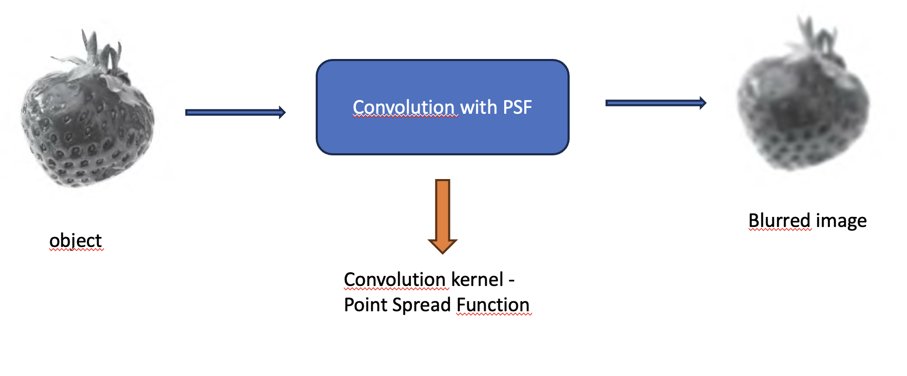

{kind=link}
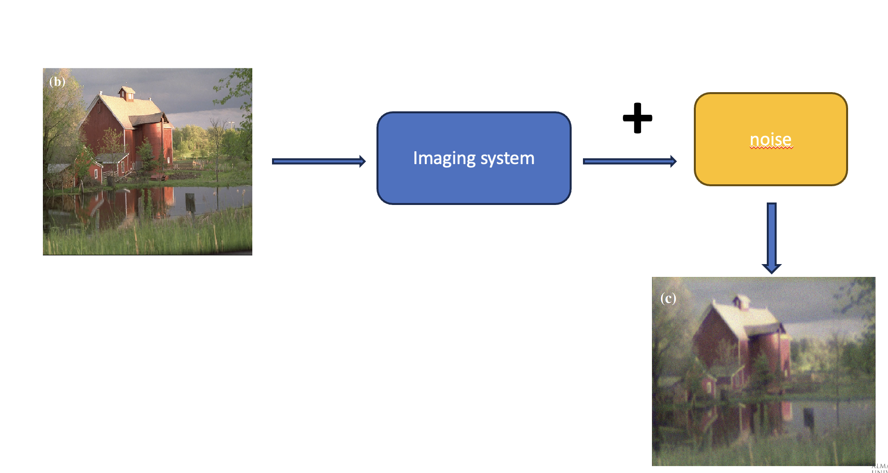

Hence the aim in this case is, given a noisy convolution, supposed to know the convolution kernel, deconvolve the observed image to get the ground truth. This is a typical liner inverse problem that can be modelled as:
The LSIS is described as a convolution. really, it is possible to write the convolution also as a matriux-vector product.
Equivalence of convolution and matrix-vector product
The convolution \(K*x=b\) can equivalently be written as a matrix-vector product \(Ax=b\) where the matrix A has the follwoing form (suppose to use periodic boundary conditions and a 3x3 kernel \(p_{i,j},i,j=1, \ldots 3\)):
{kind=link}
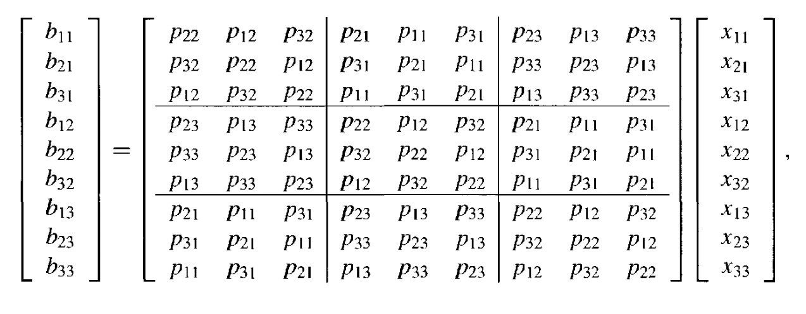

This matrix has a cyclic block structure, in particular a Block Cyclic with Cyclic Blocks (BCCB) structure.
A BCCB matrix has a particular eigenvalue decomposition:
where the eigenvectior matrix \(F\) is the Discrete Fourier Transform matrix.
Hence, to compute the matrix-vector product \(b=Ax\) we can compute: $\(b=F^T\Lambda F x\)$
by means of FFT2 (\(Fx\)) and IFFT2 (\(F^tx\)) functions.
Space invariant blur
We can visually describe the imaging process as:
{kind=link}
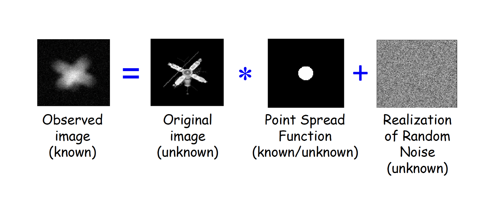

that can be detailed as:
{kind=link}
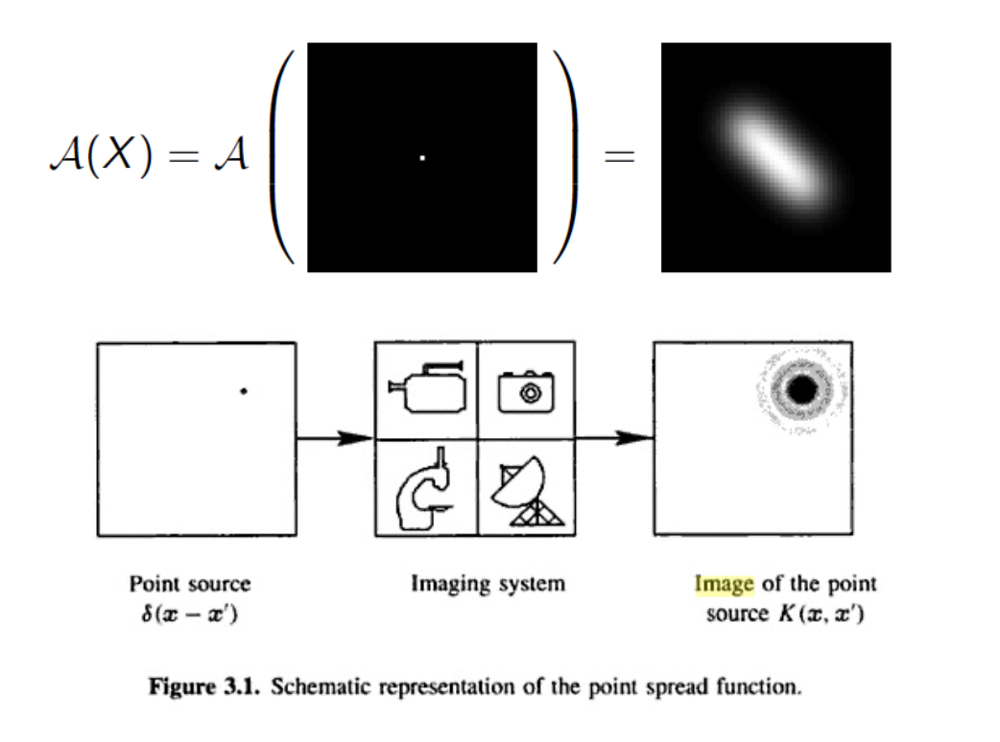

In optical system the PSF represents the deformation on each pixel due to lens imperfection.
We will consider in this course Space Invariant PSF. This means that the same PSF (convolution kernel) is applied to every pixel of the exact image. The final degraded image is the sum of the images obtained by applying the PSF to each pixel.
{kind=link}
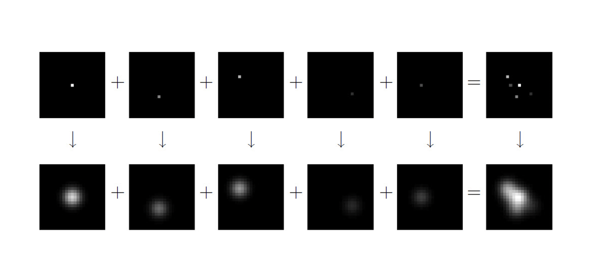

In this case we say that the PSF is space invariant and the mathematical model is a convolution.
Here you have some examples of PSFs represented as surfaces and as grayscale images:
{kind=link}
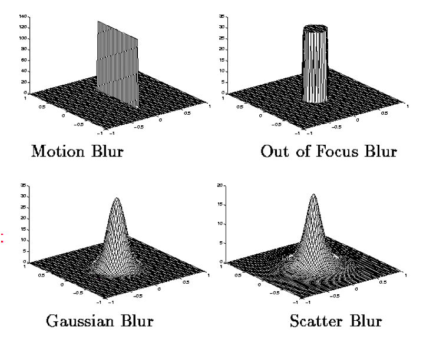

{kind=link}
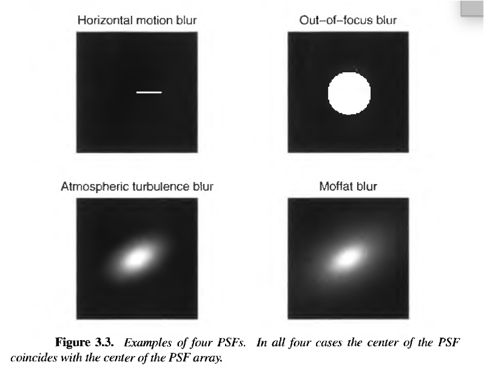

Examples of blurred images:
a) gaussian blur
{kind=link}
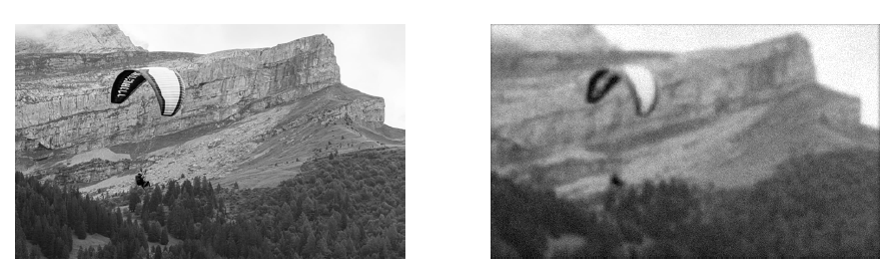

The PSF kernel is given by the following discretiazion of a gaussian function:
{kind=link}
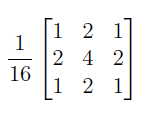

{kind=link}
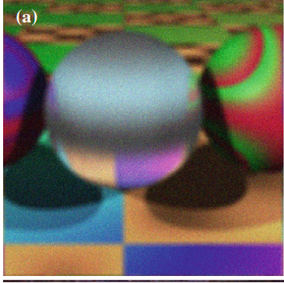

b) motion blur
{kind=link}
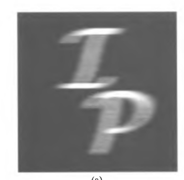

c) blur on color images
{kind=link}
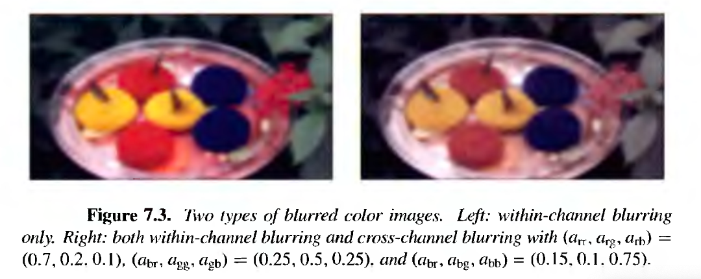

Deconvolution as an inverse problem
{kind=link}
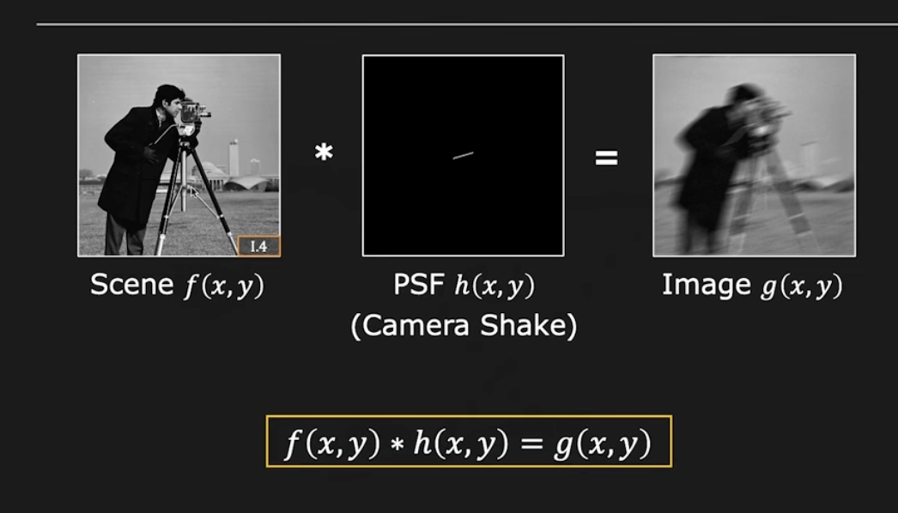

So the question is: given a captured image \(g(x,y)\) and a kernel \(k(x,y)\) is it possible to recover \(f(x,y)\)?
{kind=link}
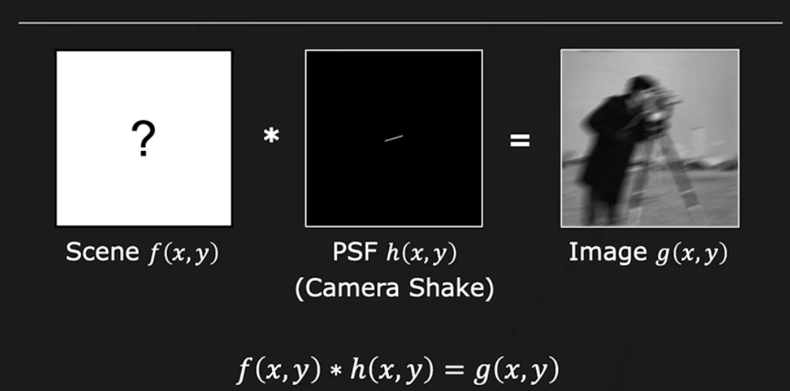

This is the so called non blind deconvolution because we know \(h\).
How to restore \(f\)
We know that the naive solution of the inverse problem is obtained to invert the linear model $\(K*x=y^{\delta} \ \ or \ \ Ax=y^{\delta}\)$
by means of the least squares:
How to solve this problem? In deblur, the most efficient computational way is to use the Discrete Fourier Transform.
Suppose that \(f'(x,y)\) is the restored image. We call it \(f'\) and not \(f\) becuase it will never be perfectly reconstructed.
(We call \(h\) the PSF kernel in the following)
We start from the case of no noise.
{kind=link}
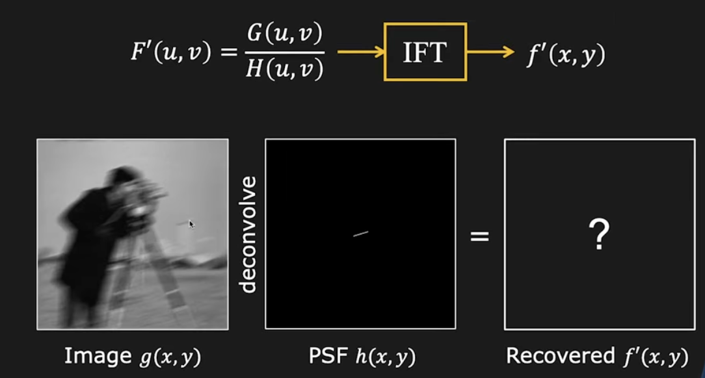

By means of the Convolution Theorem the relationship between the DFTs in the frequency space is:
Hence to get \(F'(u,v)\):
{kind=link}
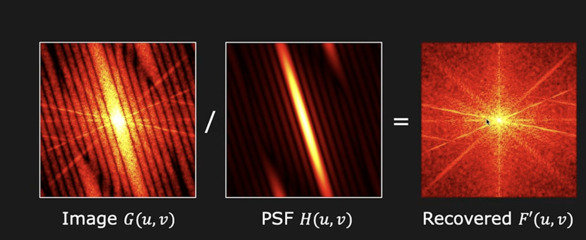

then by applying the IDFT we get:
{kind=link}
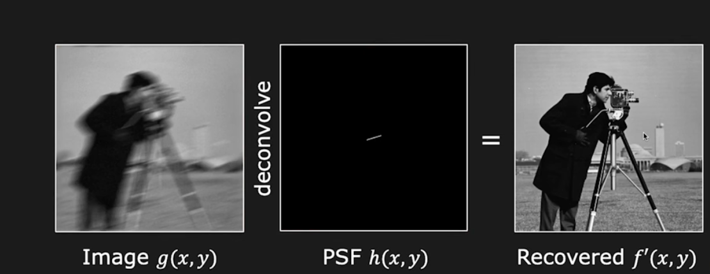

But there is a problem: NOISE
The real acquisition model is:
{kind=link}
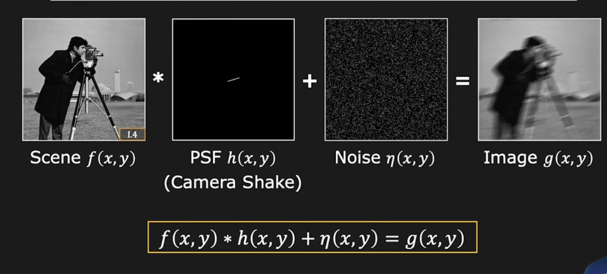

Hence the deconvolution process is represented as:
{kind=link}
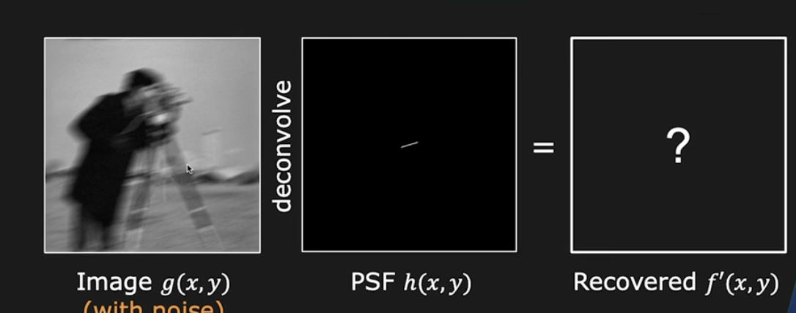

By applying the Fourier transform we obtain:
{kind=link}
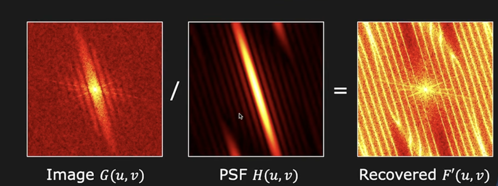

where the high frequencies in \(F'(u,v)\) are greatly amplified.
Now if you invert, i.e you compute \(f'(x,y)=IDFT(F'(u,v))\), you obtain this unreliable image dominated by noise:
{kind=link}
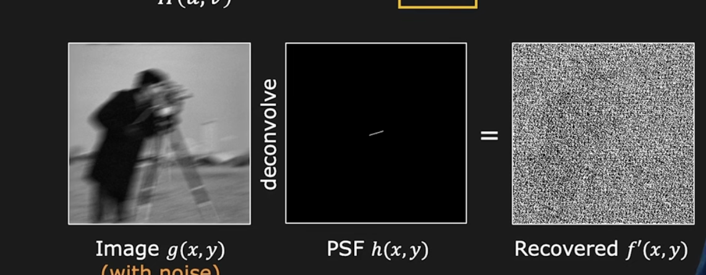

AS we have already seen the niave solution is noisy and unacceptable.
Why this happens?
{kind=link}
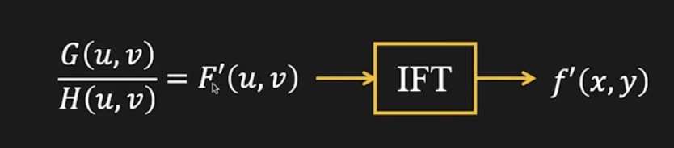

where \(H(u,v)=0\) \(F'(u,v) = \infty\), hence \(f'(x,y)\) is not recoverable.
the motion blur \(H(u,v)\) is a low-pass filter itself.
For high frequencies \((u,v)\), the noise in \(G(u,v)\) is high.
WE need some noise suppression, that is obtained by means of regularization.
Hence we apply model-based regularization approaches:
it is also possible to constraint the solution for example to be positive.
For example, if we consider Tikhonov regularization:
if we apply the Fourier transform we have as usual:
Hence the problem becomes to find \(\hat F\) so that:
and the close solution is:
where \(H^*\) is the conjugate of H.
We remind that the conjugate of the complex number \(a+ib\) is \(a -ib\).
If we use different regularization functions, the solution of the minimization problem:
is obtained by means of the iterative optimization methods that we have seen in the last lesson.
Remind that any time we need to perform the matrix-vector multiplication \(Av\) or \(A^Tw\) we do it in the Fourier space since this is a convolution in deblur.
Blind deconvolution
We have considered, up to now, of knowing the PSF, i.e. the blurring kernel.
{kind=link}
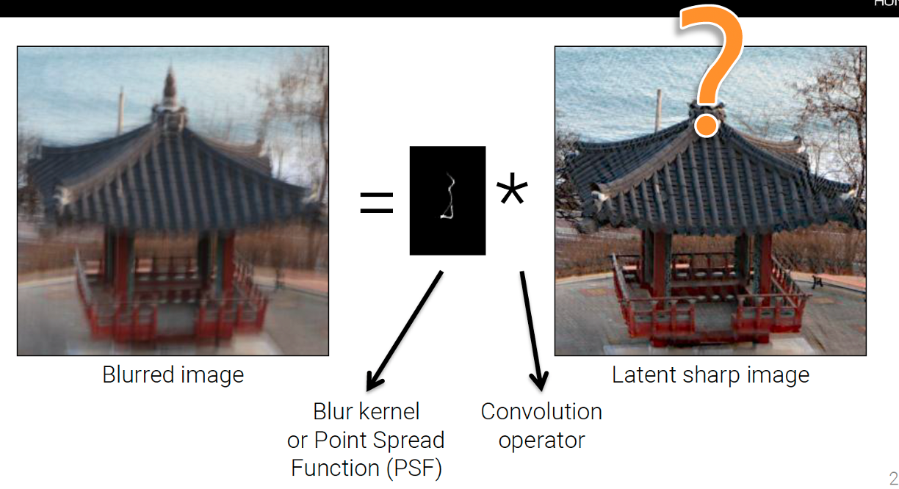

But in some real cases the PSF is not known. In this case we call it blind deconvolution.
{kind=link}
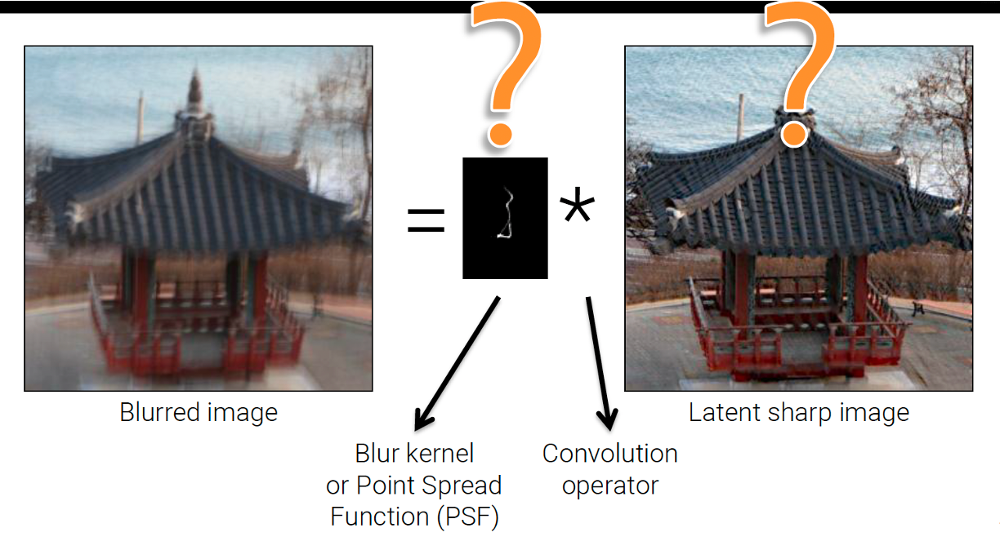

We must recover both the kernel and the reconstructed image. The task is much more difficult and the model-based approach has not given satisfactory results. Today this task is approached by means of neural networks and the results are far better.